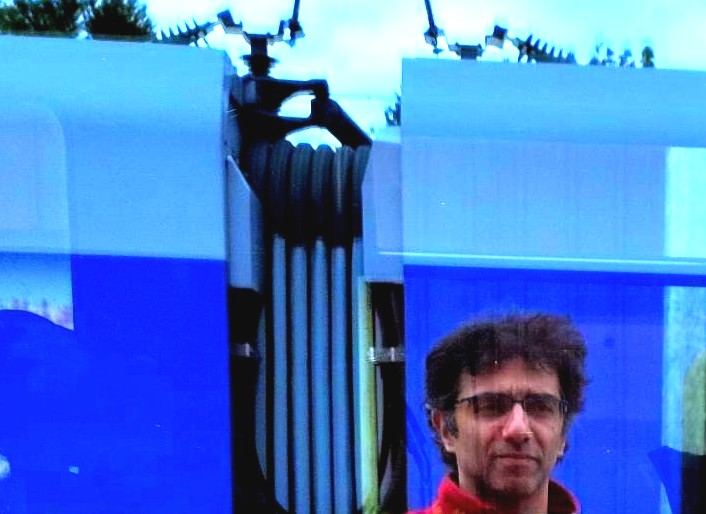

Amir Teymuri . Komponist

- 2003-2010, Studium der Fächer Geige, Klavier (bei Dilbar Hakimova und Rafael Minaskanian) und Komposition (u.a. bei Kiawash Sahebnassagh) an der Fakultät für Musik, Darstellende und Bildende Künste der Universität Teheran
- 2004, Auszeichnung bei der ersten Biennale für neue Musik an der Universität Teheran
- 2010-2018, Fortsetzung der Kompositionsstudien in Freiburg im Breisgau und Frankfurt am Main bei
Cornelius Schwehr, Orm Finnendahl und Michael Reudenbach
- 2015, Stipendiat der Sektion Musik an der Akademie der Künste in Berlin
- 2018-2020, Studium der Musikinformatik am Institut für Musikinformatik und Musikwissenschaft an der HfM Karlsruhe
- 2020-2022, Wissenschaftliche Hilfskraft am Institut für Musikwissenschaft der J.W. Goethe-Universität und Arbeit als Open Source Software Engineer in der freien Wirtschaft
- Seit 2022, Tätigkeit als freischaffender Komponist
- Seit Sommersemester 2023, Lehrtätigkeiten am Institut für Neue Musik, Komposition und Dirigieren der Hochschule für Musik und Theater München und am Institut für Musikinformatik und Musikwissenschaft der HfM Karlsruhe
Bio als Text